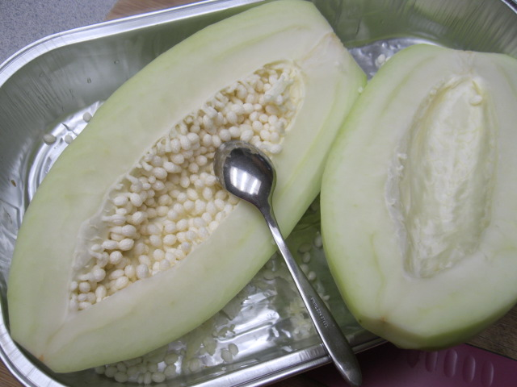

Hướng dẫn làm nước mắm dưa góp chua ngọt ăn cực đã
30-03-2020
Nguyên liệu chính:
- 1 quả đu đủ xanh
- 1 củ cà rốt
- 4 tép tỏi
- 4 tép tỏi
- 1 quả ớt băm nhỏ
- Nước mắm ngon
- Đường, giấm chua, mì chính, hạt tiêu
Bước 1: Đu đủ nạo vỏ, bỏ hột, ngâm vào nước để đu đủ tiết hết nhựa. Dùng dao thái chỉ to, hoặc cắt miếng vừa ăn, tỉa hoa tùy thích. Thái xong thì cho lại vào chậu nước sạch khác để mủ nhựa hết hoàn toàn. Thay nước khoảng 3 - 4 cho đu đủ sạch nhựa rồi rửa lại lần cuối bằng nước lọc.

Bước 2: Cà rốt nạo vỏ, rửa sạch, thải chỉ to hoặc cắt miếng vừa ăn, tỉa hoa tùy thích giống đu đủ.
Bước 3: Cho đu đủ, cà rốt vào một tô lớn, rắc ít muối tinh lên, lấy đĩa đậy lại (hoặc nắp tô nếu có) rồi xóc đều. Đợi một chút cho đu đủ, cà rốt tiết ra nước thì bóp đu đủ, cà rốt cho bớt nước và đổ phần nước muối đi. Để dễ dàng hơn thì bạn dùng bao tay. Bước này là để đu đủ, cà rốt được giòn.
Bước 4: Chuẩn bị nước ngâm dưa góp bằng cách cho nước, dấm, đường, nước mắm theo tỉ lệ 1:1:1:1 (áng lượng đủ để ngâm ngập nguyên liệu nhé) vào nồi đun sôi rồi để thật nguội,tỏi bóc vỏ, đập dập hoặc thía lát mỏng. Thả tỏi vào hỗn hợp nước ngâm khi đã nguội.
Bước 5: Đu đủ, cà rốt, dưa chuột trộn đều rồi cho vào hũ thủy tinh đã tiệt trùng rồi chế nước ngâm vào sao cho ngập hỗn hợp nguyên liệu. Nhớ gài que tre hay bát đĩa để đu đủ, cà rốt, dưa chuột không nổi lên rồi đậy kín hũ. Để hủ nơi thoáng mát.

Món dưa góp muối nước mắm này để khoảng 1 ngày là ăn được, có thể để cỡ 1 tuần nếu cho vào ngăn mát tủ lạnh.
Theo Bếp Roll tổng hợp